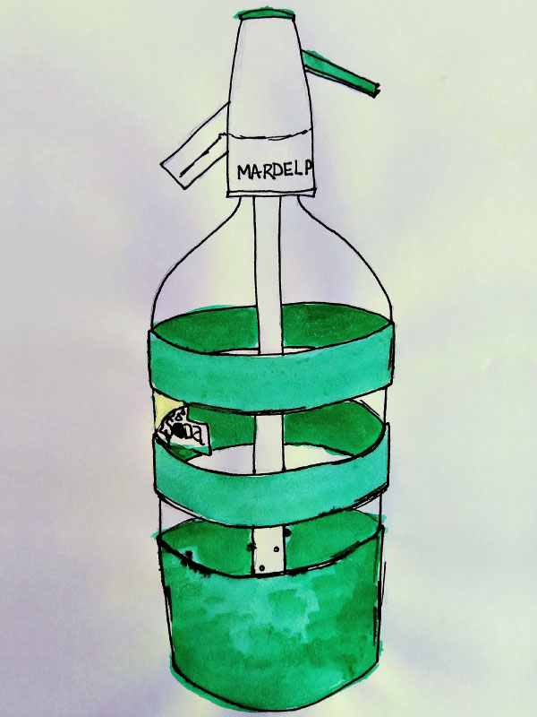
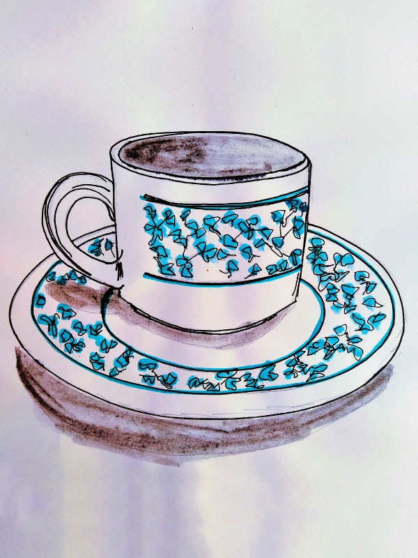
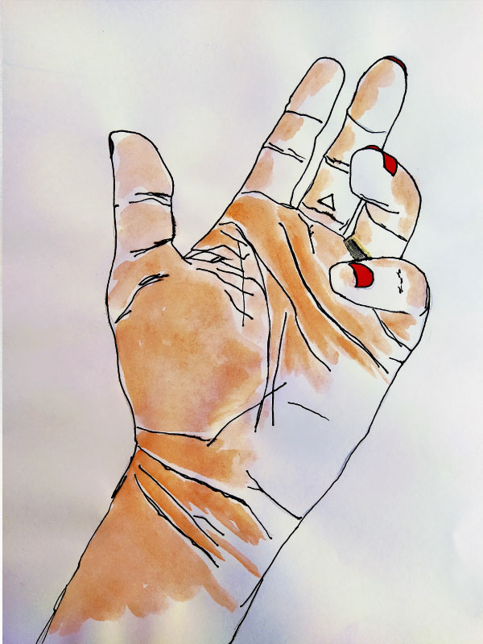
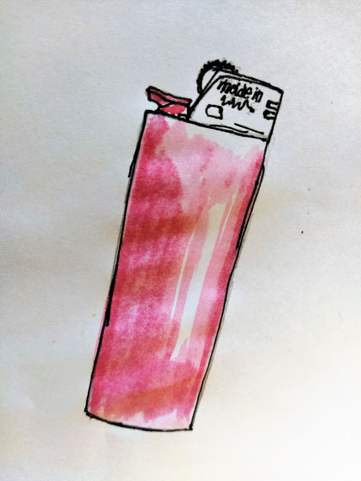

"La percepción logra al nivel de los sentidos lo que en el reino de la razón se llama entendimiento."
Rudolf Arnheim
POMELO
Por C.
Tomo la forma de las cosas que no cierran
si no es
por el corte .
Por J.
Chorrea, jugosa saliva. Arde la tarde, maúlla el mar. Otra vez ganó la derecha.

SODITA
Por C.
Voy a mirar lo que nunca se conoció
-adentro-
Por J.
La tarde
circular
del vino mojado
la tarde del verano
que ya no existe, sino,
en mis besos.

TAZA
Por C.
Creo entender los sonidos
una forma de reconciliarnos
un lazo con la herencia.
Por J.
Anastasia, anestesia, almendra.
8 horas de mi vida la taza anestesia,
anastasia, almendra.
Antesala de mis guerras cotidianas.
MATE
Por C.
Fabrico la última trinchera para las
verdades
que no se pueden enunciar.
Por J.
La única consecuencia de tus mates:
mi boca partida.

MANO
Por C.
Elijo un modo parecido a escalar las
cumbres
o agarrarse de lo que se toque más allá de
ellas.
Por J.
Mis dedos van a poder. Van a ser poder.
La única causa perfecta del mundo.

ENCENDEDOR
Por C.
Hago arder los nidos imaginarios
me digo a mi misma: es un juego.
Por J.
Amor, probablemente, amor, estemos compartidos.
ACUARELAS
Por C.
En las capturas de pantalla de alguna galería ahora sos recuerdos.
Por J.
Un arma contra la muerte.